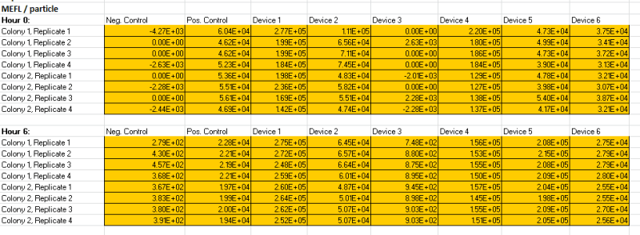

For the past few years, iGEM has hosted an interlaboratory studies across the world to establish reproducibility in fluorescence measurement. The 2018 Stony_Brook Team participated in iGEM’s fifth interlab study. This year’s interlab focuses on standardizing fluorescence measurements by comparing the use of optical density to counting colony-forming units (CFUs) in transformed E. coli. There is a lot of variability in fluorescence measurements based on different instruments, so this year’s study wanted to utilize a direct approach to measuring fluorescence by counting CFUs. In order to conduct the study, the team transformed DH5-alpha Escherichia coli cells with eight plasmids that iGEM provided in the distribution kits. We followed iGEM’s transformation protocols for single tube transformation.
Calibration 1
First, we measured the OD600 of LUDOX CL-X in order to obtain a reference point. See Table 1.
Next, we conducted serial dilutions using silica beads that are the same size as E. coli to create a standard particle curve. As expected, the curve for the standard particles was linear. The results are depicted in graph 1 and graph 2
Finally, we did serial dilutions with fluorescein to obtain a fluorescence standard curve. The results are pictured in graph 3 and graph 4. As expected, the curves for fluorescence was linear.
We determined the number of cells in a plate by simply counting them. First, we plated our positive and negative controls onto plates with chloramphenicol. We prepared our starting sample by diluting the positive and negative control colonies for an 8-fold dilution. After, we diluted the cultures further to a target OD of .1 and created triplicates of each culture for a final total of twelve. We conducted serial dilutions with the twelve samples. We plated dilution 3 (8x104) , dilution 4 (8 x 105) , and dilution 5 (8 x 106) on agar plates and incubated them overnight. After 18-20 hours, we counted the colonies on each of the plate and calculated the CFU/mL. The data is displayed in tables 8 through 10. For plates with cells that were too numerous to count, we labeled as “TNTC” in the tables.